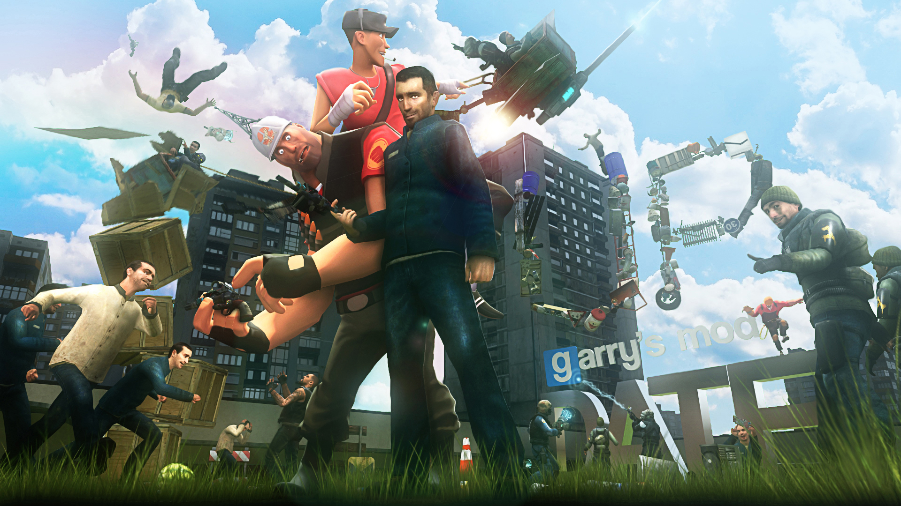
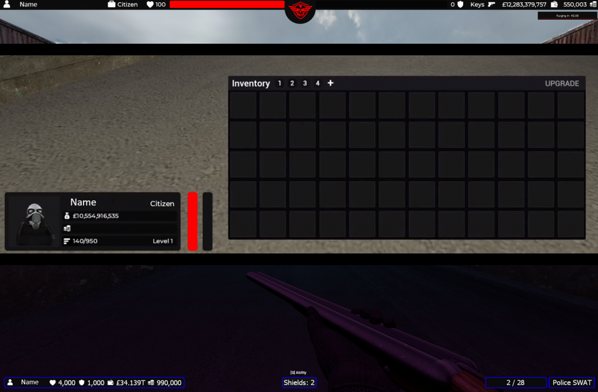
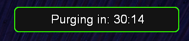
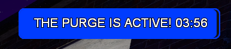
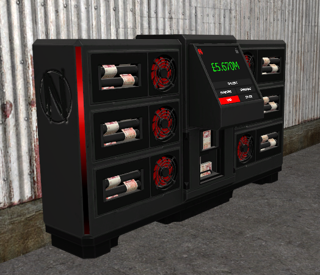
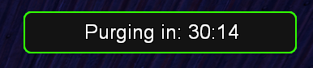
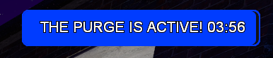
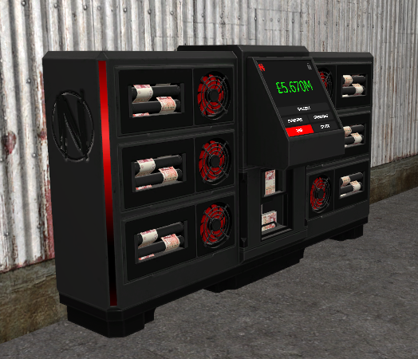

Garry's Mod and Learning LUA
 Lockdown and Learning To CodeIn 2020 the UK was hit with a nationwide lockdown due to the COVID pandemic, at this time, it was clear that I was going to be spending a lot of time on my PC. I first started using this lockdown period as a great time to sink countless hours into the games that I loved, one of those being the game Garry's Mod. However, as it started to become clearer that we were going to be spending a lot of time in lockdown, the hours spent playing games started to become more and more tedious. This led me to start questioning how the games that I played were created. As I started researching, I became more and more interested in the work that goes into games behind the scenes, leading me to wanting to get involved. With GMod being sandbox game that allows for users to create their own gamemodes, servers and addons, whilst also having a very detailed wiki, there seemed like no better place to start teaching myself how it could be done. I first started by attempting to create a server in the DarkRP gamemode. Initially, this consisted of me scouring the internet for free addons with very little attempt to create anything original. However, I quickly learnt that to be successfull, you need to put the effort in to create something original. As I was only 15 going on 16 at the time, I didnt quite have the money to pay for a developer meaning that I would have to create the addons on my own. I started by watching many tutorials and creating and editing basic addons and functions. This started to work well for me as people started to notice the improvement of my server, leading to a slight rise in its popularity. I then started to develop slightly more complex addons, with a particular preference in making UIs and menus. I also started to take existing addons and rework their UIs further fueling my passion for UI development (which I will go into more detail about later). All in all, this had a very positive effect on my time during lockdown. I had my own server that was reaching over 100 players daily, whilst I also started to join in on other servers as a developer/co-owner. By the end of the second lockdown I was a part of 3 servers that had over 100 players daily, as well as being apart of a few more that would have around 25-50 players daily. This started to become very profititable, and also lead me to start hiring external developers and staff to work on projects that I did not have time for. Eventually, as life started to resume, and my time online got shorter as well as the natural decline in playerbase of the game, my success started to peter out. By the time that I joined the University of Staffordshire, my days owning and running gmod servers came to an end. However, I would return occaisonally to make an addon here or there if there was a need. To this day, I still receive messages from people during that time who were aware my work asking if I can help them out with a development project.
Team Management and Leadership SkillsDue to the large amount of servers that I had owned or developed for, it was natural that I gained some team management and leadership skills along the way. Each of these servers that I had run also had staff, moderators, admins, and developers all part of the team. I had successful application processes which included questionnaires, interviews, and training as a part of it, allowing me to employ the right staff in the right areas. I had management staff that would train and look out for new staff. I also had a three-strike system that could lead to disciplinaries, including staff demotions or removal from their position depending on the severity. As this was all part of a game, people, and staff maturity levels also fluctuated meaning that there were a lot of disciplinary actions that took place. The staff who excelled were also rewarded, either through bonus rewards or promotion to a new position. Overall, I believe that by doing all of this, I have gained crucial team management and leadership skills that I could not have gained anywhere else.
Some of My WorkAs mentioned previously, I created lots of add-ons, including full system add-ons, as well as menus and UIs during my time working on GMod servers. Here I am going to give some examples of my favorite pieces of work that I have completed. Firsly, here is an example of some of the UIs I have created for different servers. This includes 3 player HUDs and an example of an inventory's UI inspired from the server "Elitelupus Roleplay". These were all made in code with LUA:
Here is a video from one of my work in progress servers that was never released showing a HUD UI as well as 3D2D spatial UI:
The next video I am going to show is a video showing a recent project I have been working on where I have developed a potion selling, perk, shield, token exchange, HUD, and drug lab system for a server. These addons have been made for a server that is using many addons from the addon creator "Xenin". Xenin also has their own UI framework which I was able to use to create UIs that keep within the theme of the server. Both the 'C Menu' and 'F4 Menu' are menus that Xenin sells, I have created all of these add-ons using his UI framework, as well as keeping within the same style and colour palette so that they can seamlessly blend in."
Finally, I am just going to add some pictures and screenshots of addons and UIs I have created in the game Garry's Mod:

 





There are also many more peices of work and UI that I have done that have unfortunately been lost to time. However, I believe that these examples give a good showcase of what I am able to do.